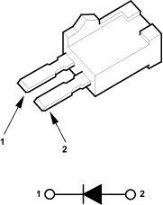
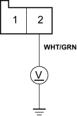

- Reinstall the condenser fan relay.
- Remove the A/C diode A from the under middle of dash.
- Check for current flow in both directions between the No. 1 and No. 2 terminals of the A/C diode A.
A/C DIODE A

Is there current flow in only one direction?
YES - Go to step 12.
NO - Replace the A/C diode A. 
- Turn the ignition switch ON (II).
- Measure the voltage between the No. 2 terminal of the A/C diode A 2P connector and body ground.
A/C DIODE A 2P CONNECTOR

Wire side of female terminals
Is there battery voltage?
YES - Repair open in the wire between the A/C diode A and the A/C pressure switch.
NO - Repair open in the wire between the condenser fan relay and the A/C diode A.
- Disconnect the jumper wire.
- Reinstall the condenser fan relay.
- Disconnect the condenser fan 2P connector.
- Turn the ignition switch ON (II), then turn the A/C and fan switches ON.
- Measure the voltage between the No. 2 terminal of the condenser fan 2P connector and body ground.
CONDENSER FAN 2P CONNECTOR

Wire side of female terminals
Is there battery voltage?
YES - Go to step 19.
NO - Repair open in the wire between the condenser fan relay and the condenser fan.
- Turn the A/C and fan switches OFF, then turn the ignition switch OFF.
- Reconnect the condenser fan 2P connector.
- Connect the No.1 terminal of the condenser fan 2P connector to body ground with a jumper wire.
CONDENSER FAN 2P CONNECTOR

Wire side of female terminals